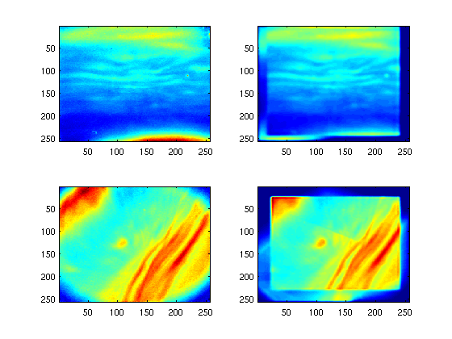

Template/example script for auroral tomography,
Contents
This script is developed to be used as a template script for tomographic reconstruction of ALIS data. It should be well suited for adaption to most cases, and could as well be used by other ground based auroral imaging systems - provided that the requisit background information about the image locations and the geometrical characteristics of the imagers is made available for the functions that require so.
Tomography for ALIS
Skeleton script for auroral tomography, developed for use with ALIS data. The tomographic inversion is based on the "quick-and-'dirty'-but-more-accurate" projection algorithm based on blobbs (smooth basis functions, in this implementation cos^2) by Peter Rydesaeter [Rydesaeter and Gustavsson 2001]. The currently available itterative inversions are ART, mSIRT, SIRT and FMAPE is on the task list.
This script could be used as a pattern script. For adaption to specific events adjust, modify and wrap to make it fit your needs and whishes.
Step 1: loading images
To load images and set up camera parameters: 1, make an array of fits file names for all images from one event (same time)
cd /alis/stdnames/1997/02/16 w5 = dir('20/*A.fits'); w6 = dir('20/*N.fits'); % Above is the matlab-prefered way - it leaves the filenames % without the |path| though. Below is the way I used to do it. % [q,w] = my_unix('ls -1 --color=never 970216/[56]*.RAF'); % file_list = str2mat(w(2,:),w(9,:)) % Now we have to prepend the directory path to the filenames: file_list = str2mat(['20/',w5(12).name],['20/',w6(12).name]) stns = tomo_inp_images(file_list); % or % stns = tomo_inp_images(file_list,img_ops); % Where FILE_LIST is the image files from the different stations % (=viewing positions). IMG_OPS should be a structure as returned % from TYPICAL_PRE_PROC_OPS (or an array of such structures). For % format of IMG_OPS see INIMG. If only FILE_LIST is given default % parameters are used for image pre-processing, 2-D 3x3 median % filtering, quadrant correction and image resizing to 256x256 % pixels. % % The function automatically searches for optical parameters.
file_list = 20/1997021620100000A.fits 20/1997021620100000N.fits Station 5 Obs az and ze: 180 12 Az, Ze, Optpar 180 12 -1.026221 1.028655 -0.1334539 -12.12002 1.082014 -0.009886289 0.03867633 0.3740647 3 0 Station 6 Obs az and ze: 0 0 Az, Ze, Optpar 0 0 -0.7127064 0.7104851 14.18723 9.394906 125.2752 -0.01203452 -0.02688673 -0.01076988 3 0

Options for the tomographic inversion
To Control the tomographic reconstruction we need to set some option. To get a structure with the default fields:
tomo_ops = make_tomo_ops
tomo_ops =
tomotype: []
qb: []
renorm: []
filtertype: []
filterkernel: []
randorder: []
tomo_type
tomo_type is the tomographic reconstruction method to use, the available options are: 1 Multiplicative ART 2. Multiplicative SIRT 3. SIRT 4. FMAPE Here we select Multiplicative ART
tomo_ops.tomotype = 1;
randorder
To prevent "cycling" related problems it is preferable to run the ART type reconstructions in random order over the images. For other reasons it might be good to avoid ever having a sertain image either first or last in a cycle over the images. Therefore the images can be grouped into 3 classes 1 to 3. Here images in class 1 will always be used to update the reconstruction before images in class 2 and 3. Here we set both images in the same randorder group:
tomo_ops.randorder = [2 2];
qb
Quiet border, in order to avoid problems at the edges of the image (imperfect flat-field correction and the like) it is advisable to set the ratio to 1 in a frame before propagating the update into the reconstruction. The regions are specified as [ymin ymax xmin xmax] for the region to "exclude from the quiet frame". One line per image - if no qb should be used for a certain image that line should be set to [nan nan nan nan].
tomo_ops.qb = [ 1 244 17 241;
23 230 23 241];
renorm
In case the absolute sensitivity of a camera is in doubt it is still possible to use its information about the spatial intensity variation in the reconstruction. This is done by selecting a region in the image (again [ymin ymax xmin xmax]) from which the ratio betweens the total intensity in the image and the projection of the reconstruction will be used as the absolute sensitivity correction. For the stations wih good absolute calibrations renorm should have a line with nan.
tomo_ops.renorm = [NaN NaN NaN NaN
88 216 60 187];
subplot(2,2,1)
imagesc(stns(1).img)
subplot(2,2,2)
imagesc(stns(2).img)
subplot(2,2,3)
imagesc(stns(1).img)
subplot(2,2,4)
imagesc(stns(2).img)
for i = 1:2
subplot(2,2,i)
hold on
plot(tomo_ops.qb(i,[3 4 4 3 3]),tomo_ops.qb(i,[1 1 2 2 1]),'w','linewidth',2)
title(['Image ',num2str(i),' with qb overlayd'],'fontsize',16)
end
for i = 1:2
subplot(2,2,i+2)
hold on
plot(tomo_ops.renorm(i,[3 4 4 3 3]),tomo_ops.renorm(i,[1 1 2 2 1]),'w','linewidth',2)
title(['Image ',num2str(i),' with renorm overlayd'],'fontsize',16)
end

Filtering
Then there is filtering of the reconstruction after each itteration over all images. Here there are 4 different choises:
- No filtering {0}
- Horisontal local averaging (filter) {1}
- Horisontal median filter (medfilt2) {2}
- Proximity filtering {3}
Choises #1 and #3 uses a filter kernel and choise #2 uses a region/window. The proximity filter is suggested as a first attempt, if the reconstruction fails then the horisontal averaging/median could be last resorts.
tomo_ops.filtertype = 3;
Here we set the filter kernel later during the reconstruction stage, and then we can even modiify it as the reconstruction progresses.
This need not be done manualy by hand. If a station struct is sent as input parameter to make_tomo_ops then the function will ask for inputs.
>> tomo_ops = make_tomo_ops(stns);
Setting up the geometry
Still not very polished/finished set up of the geography/geometry of the 3-D region of/for/(in which) the reconstruction. Some use of INV_PROJECT_IMG might be helpfull for determining/selecting an appropriate region of the reconstruction. One thing to remember is that MATLAB(R) is building their 3-D arrays as V(y,x,z). Here a choise is wether to use the direction along the magnetic field or the vertical as the third dimension. The 'field aligned proximity' filtering should preferably be used with r3 || e_m. 1, Make the base function block:
Vem = zeros([90 100 64]); % set the lower south-west corner: r0 = [-64*2 -64*2 80]; r0 = [-128 -64 80]; % Define the latice unit vectors dr1 = [1.8 0 0]; dr2 = [0 1.8 0]; % With e3 || vertical: dr3 = [0 0 1.8]; % or || magnetic zenith: dr3 = [0 -1.8*tan(pi*12/180) 1.8*cos(pi*12/180)]; % above is an error, below is a corrected version dr3 = [0 -1.8*tan(pi*12/180) 1.8*cos(pi*12/180)]; % Calculate duplicate arrays for the position of the base functions: [r,X,Y,Z] = sc_positioning(r0,dr1,dr2,dr3,Vem); XfI = r0(1)+dr1(1)*(X-1)+dr2(1)*(Y-1)+dr3(1)*(Z-1); YfI = r0(2)+dr1(2)*(X-1)+dr2(2)*(Y-1)+dr3(2)*(Z-1); ZfI = r0(3)+dr1(3)*(X-1)+dr2(3)*(Y-1)+dr3(3)*(Z-1);
Set the number of size layers
the projection algorithm divides the base into classes based on the size of their footprint in the image. Here it is needed to select the number of layers to use in the image projection, more is better and slower: 8 minimum, 10 better, 16 getting on the slow side...
nr_layers = 10;
Creating the station structure
Here we make the structure array holding the projection matrix, the filter kernels and size grouping of the base functions needed for the fast projection. Set up the stuff on the camera and 3D structure needed for the fast projection.
for ii = 1:length(stns), rstn = stns(ii).obs.pos; optpar = stns(ii).optpar; imgsize = size(stns(ii).img); cmt = stns(ii).obs.cmtr; [stns(ii).uv,stns(ii).d,stns(ii).l_cl,stns(ii).bfk] = camera_set_up_sc(r,X,Y,Z,optpar,rstn,imgsize,nr_layers,cmt); end
Start guess
To avoid the problems in the reconstruction stemming from uncertainties in absolute sensitivity, vignetting, orientation and non-overlapping-f-o-vs it is preferable to usee non-flat start guesses that tries to approximate the distribution of volume emission. A Cunning (?) method to obtain a resonable start guess for the reconstruction is to adjust a 3D distribution with chapman profiles centered at ALT with width WIDTH. STRONGLY RECOMENDED. It is found that the exact value of ALT does not affect the resulting reconstruction. But the regarding the width it is preferable to err on the narrow side here as the reconstruction tends to spread the volume emission in altitude rather than compress it.
alt_max5577 = 115;
width = 25;
[Vem0,stns] = tomo_start_guess(stns,alt_max5577,width,XfI,YfI,ZfI);
clf
slice(Vem0,47,50,20),shading interp,caxis([0 .7e8]),view(90,0)
1.0e+08 *
5.2007 0.0000

slice(Vem0,47,50,20),shading interp,caxis([0 .7e8]),view(0,90)

Intensity scaling
This start guess should then be scaled. Function to scale 3D intensities to give projections that are in the same intensity range as the images. Not needed here since the function is already called from within TOMO_START_GUESS, but might be usefull in the working process. [stns,Vem] = adjust_level(stns,Vem,1);
Tomographic update:
Here are the itterative tomographic steps and filtering made.
nr_laps = 1; fS = [7 7 5 5 3 3]; Vem = Vem0; for i_f = 1:6, % Here we make the filter kernel smaller and smaller as the % reconstruction proceeds [xf,yf] = meshgrid(1:fS(i_f),1:fS(i_f)); fK = exp(-(xf-mean(xf(:))).^2/mean(xf(:)).^2-(yf-mean(yf(:))).^2/mean(yf(:))^2); % It is no more difficult than to adjust the % |tomo_ops.filterkernel|. And the other options are no more % difficult to modify tomo_ops.filterkernel = fK; [Vem,stns] = tomo_steps(Vem,stns,tomo_ops,nr_laps); end clf slice(Vem,47,50,20),shading interp,caxis([0 .7e8])

pause(3)
slice(Vem,47,50,20),shading interp,caxis([0 .7e8]),view(0,90)

pause(3)
slice(Vem,47,50,20),shading interp,caxis([0 .7e8]),view(90,0)

subplot(2,2,1) imagesc(stns(1).img) cax = caxis; subplot(2,2,2) imagesc(stns(1).proj) caxis(cax) subplot(2,2,3) imagesc(stns(2).img) cax = caxis; subplot(2,2,4) norm_regx1 = tomo_ops.renorm(2,1); norm_regx2 = tomo_ops.renorm(2,2); norm_regy1 = tomo_ops.renorm(2,3); norm_regy2 = tomo_ops.renorm(2,4); imagesc(stns(2).proj*mean(mean(stns(2).img(norm_regx1:norm_regx2,norm_regy1:norm_regy2)./stns(2).proj(norm_regx1:norm_regx2,norm_regy1:norm_regy2)))) caxis(cax)